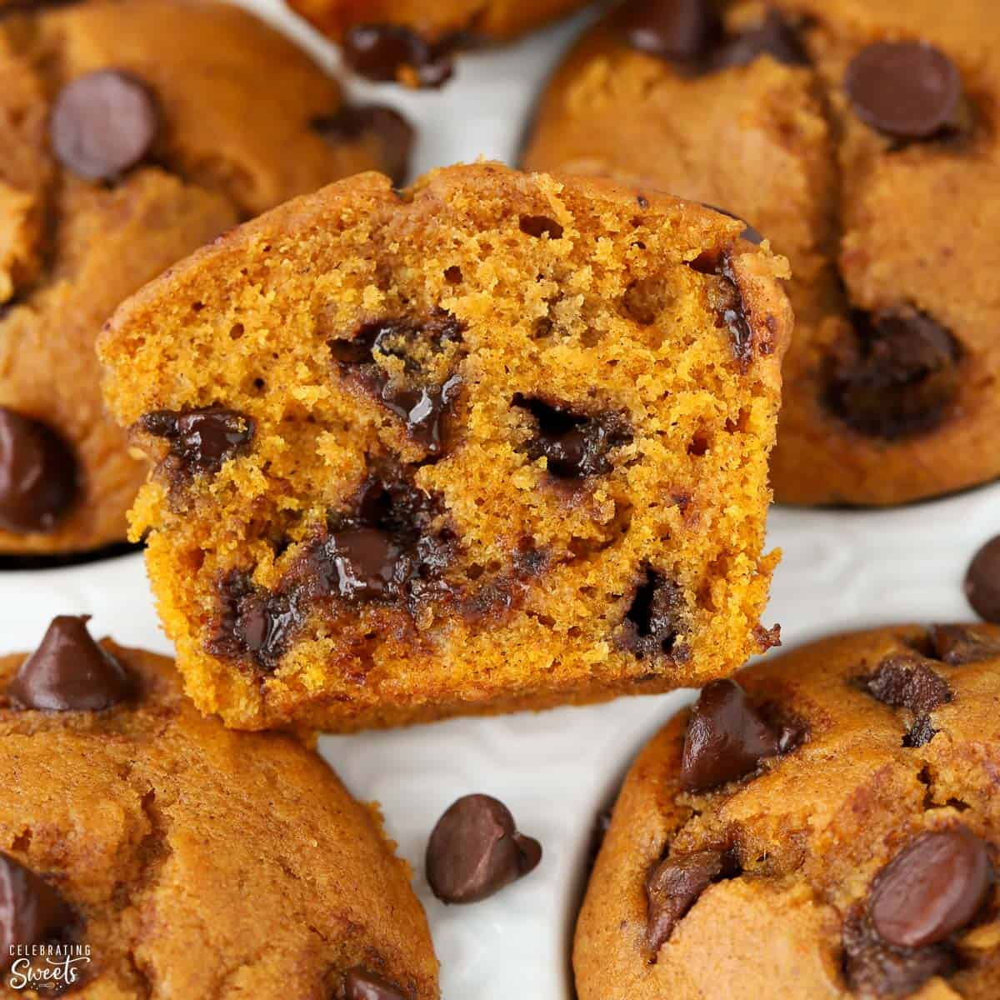

Pumpkin Chocolate Chip Muffins

Description
The best part of fall
Ingredients
- 1 large can of pureed pumpkin
- 3 cups of sugar
- 1 tsp salt
- 1 cup canola oil
- 3 cups flour
- 2 cups chocolate chips
- 1 tsp baking soda
- 1 tbsp baking powder
- 1 tsp cinnamon
- 2 eggs
- 1 1/2 tsp vanilla
Steps
- Preheat the oven to 350F.
- In a large bowl, cream the oil an sugar together. Mix in the vanilla and pureed pumpkin
- In a medium bowl, mix all dry ingredients together. Add it to the creamed pumpkin mixture only until combined.
- Fill the muffin tins 2/3 of the way with the mixture.
- Bake for 30 mins and let cool at least 15 mins.